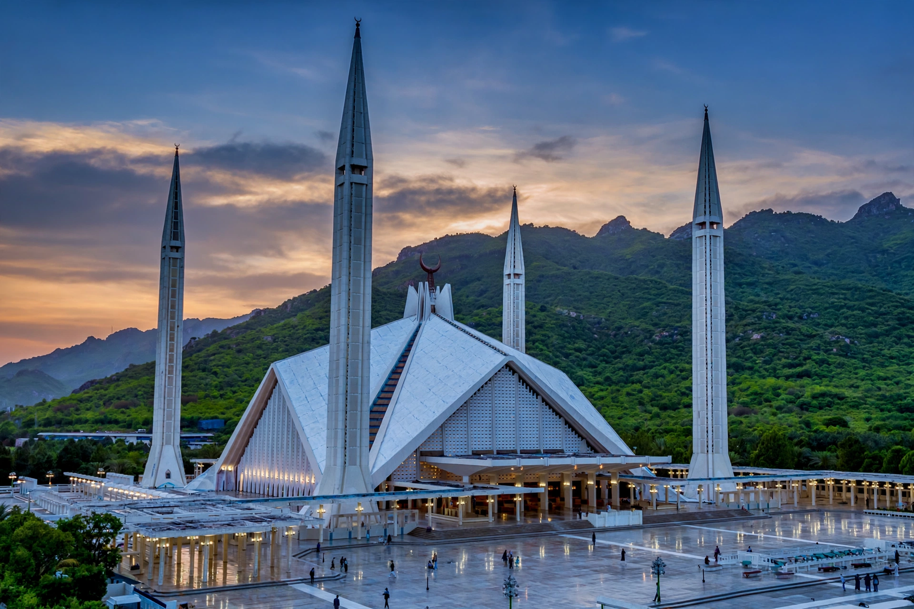

Islamabad

[Image: Photograph of the Faisal Mosque at dusk with the Margalla Hills behind it]
Islamabad is the capital city of Pakistan, located on the Pothohar Plateau in the north-east of the country, against the backdrop of the Margalla Hills. A planned city built during the 1960s to replace Karachi as the capital, it is known for its wide, tree-lined avenues, sector-based layout and comparatively green, orderly character.
Geography and layout
The city was designed by a team led by Greek architect Constantinos Doxiadis and is divided into numbered sectors arranged in a grid. It forms a conurbation with neighbouring Rawalpindi. The Margalla Hills National Park rises immediately to the north.
Landmarks
Islamabad's best-known landmark is the Faisal Mosque, one of the largest mosques in the world, with a distinctive folded, tent-like design, completed in 1986 and named for King Faisal of Saudi Arabia. Other landmarks include the Pakistan Monument, Daman-e-Koh viewpoint and Rawal Lake.